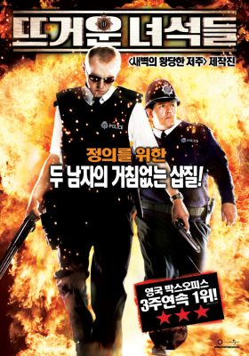
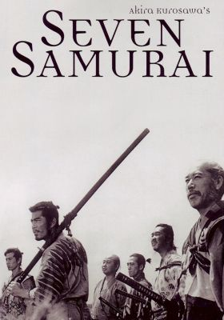

| 순위 | 영화 제목 | 줄거리 | 이미지 | 링크 |
|---|---|---|---|---|
| 1 | 뜨거운 녀석들 |
런던에서 잘나가는 경찰 니콜라스 엔젤(사이몬 페그)은 몸을 사리지 않는 근성과 동물적인 감각으로 검거율 400%라는 경이적인 기록을 세우며 승승장구하지만 경찰청 간부들과 동료들의 견제를 받아 시골로 좌천된다. 그가 부임한 곳은 범죄율 제로를 자랑하는 아름답고 평화로운 마을 샌드포드.... |
 | 바로가기 |
| 2 | 본 얼티메이텀 |
“세상이 멸망하면서 누가 미친 건지 알 수 없어졌다. 나인지 이 세상인지..” 핵전쟁으로 멸망한 22세기. 얼마 남지 않은 물과 기름을 차지한 독재자 임모탄 조가 살아남은 인류를 지배한다. 한편, 아내와 딸을 잃고 살아남기 위해 사막을 떠돌던 맥스(톰 하디)는 임모탄의 부하들에게 납치되어 노예로 끌려가고, 폭정에 반발한 사령관 퓨리오사(샤를리즈 테론)는 인류 생존의 열쇠를 쥔 임모탄의 여인들을 탈취해 분노의 도로로 폭주한다. 이에 임모탄의 전사들과 신인류 눅스(니콜라스 홀트)는 맥스를 이끌고 퓨리오사의 뒤를 쫓는데... |
바로가기 | |
| 3 | 매드맥스: 분노의도로 |
“세상이 멸망하면서 누가 미친 건지 알 수 없어졌다. 나인지 이 세상인지..” 핵전쟁으로 멸망한 22세기. 얼마 남지 않은 물과 기름을 차지한 독재자 임모탄 조가 살아남은 인류를 지배한다. 한편, 아내와 딸을 잃고 살아남기 위해 사막을 떠돌던 맥스(톰 하디)는 임모탄의 부하들에게 납치되어 노예로 끌려가고, 폭정에 반발한 사령관 퓨리오사(샤를리즈 테론)는 인류 생존의 열쇠를 쥔 임모탄의 여인들을 탈취해 분노의 도로로 폭주한다. 이에 임모탄의 전사들과 신인류 눅스(니콜라스 홀트)는 맥스를 이끌고 퓨리오사의 뒤를 쫓는데... |
바로가기 | |
| 4 | 밀리언 달러 베이비 |
딸과의 관계가 소원해진 채 혼자 낡은 체육관을 운영하며 권투 선수들을 키우는 프랭키(클린트 이스트우드)에게 매기(힐러리 스웽크)가 찾아온다. 선수로 키워 달라는 말에 프랭키는 30살이 넘은 여자라는 이유로 매몰차게 거절하지만 매기는 계속 체육관에... |
바로가기 | |
| 5 |
일본의 전국시대. 주민들은 황폐한 땅에서 어렵게 수확한 식량으로 한해 한해를 넘기는 빈촌에 살고 있다. 이 빈촌엔 보리 수확이 끝날 무렵이면 어김없이 산적들이 찾아와 모든 식량을 모조리 약탈해 간다. 싸워도 애원해도 소용이 없었다. 가만히 있을 수만은 없던 촌장의 결단으로... |
 | 바로가기 |